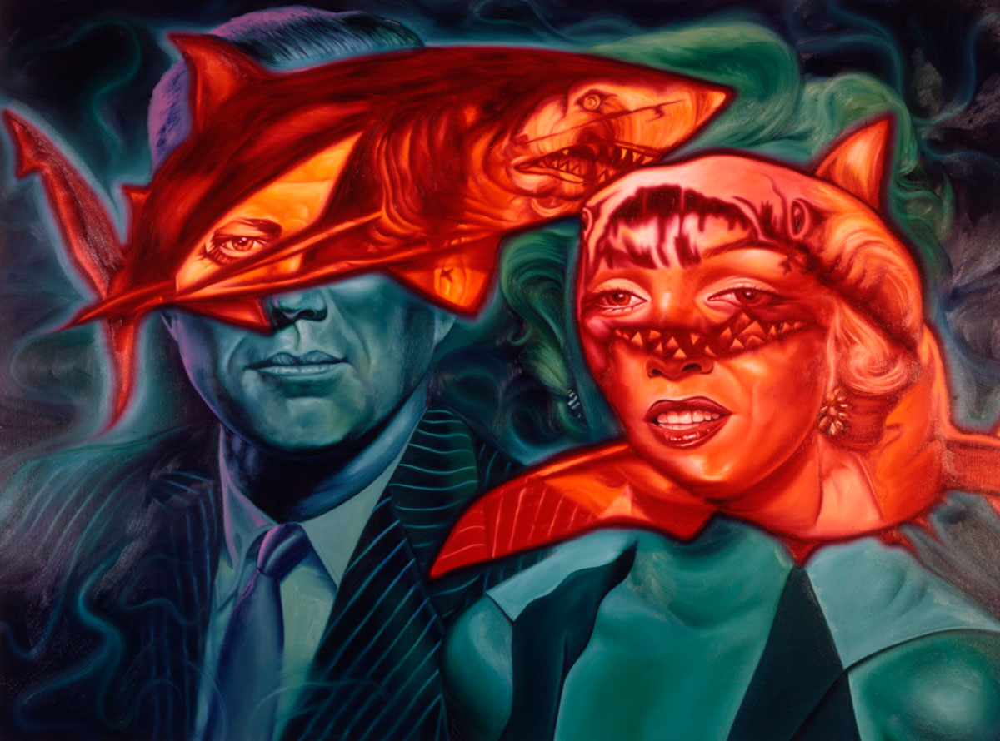

Ancillary Documentation


Exhibitions
Inbred/Hybrid, Gallery Stendhal, New York, New York, US, September 14–October 13, 1991.


Opera Gallery, gallery presentation, New York, New York, US, circa 2000s.
Literature
Ron English, Popaganda: The Art & Subversion of Ron English (San Francisco: Last Gasp, 2001), p. 77. ISBN 1-887128-60-3.

“Ron English’s ‘Agit-Pop,’” POP ART, November 30, 2008. Online.